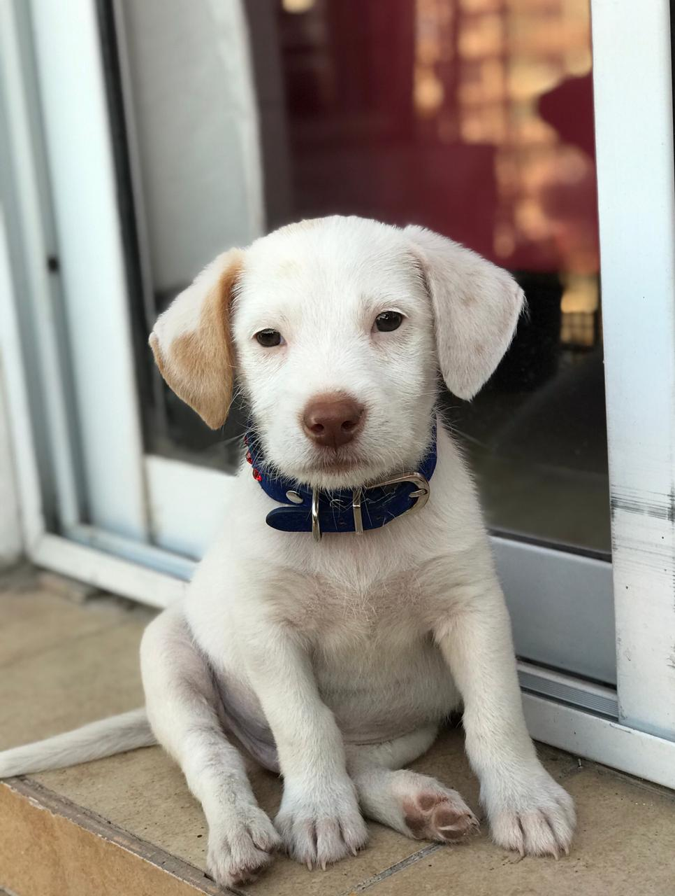
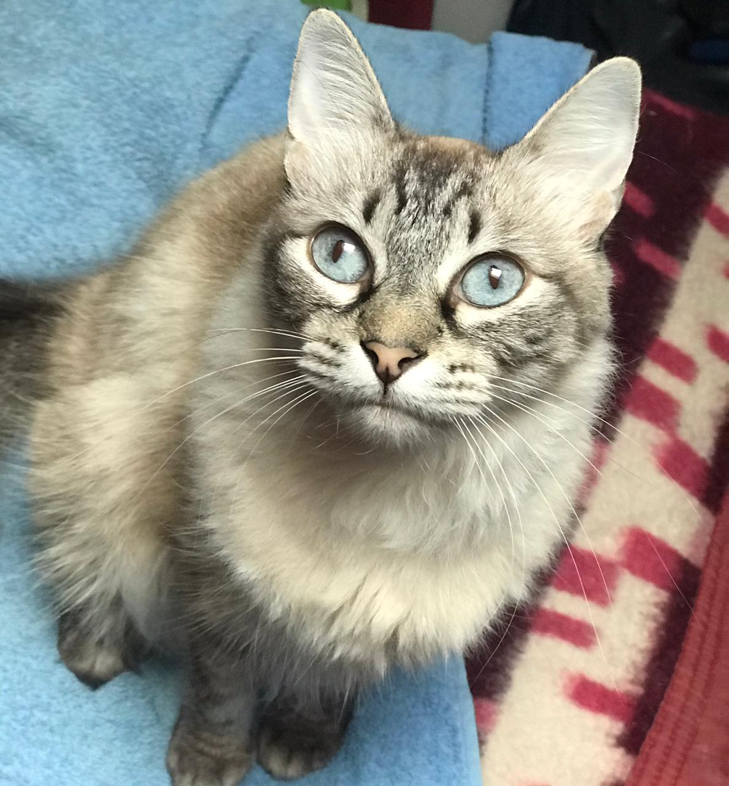
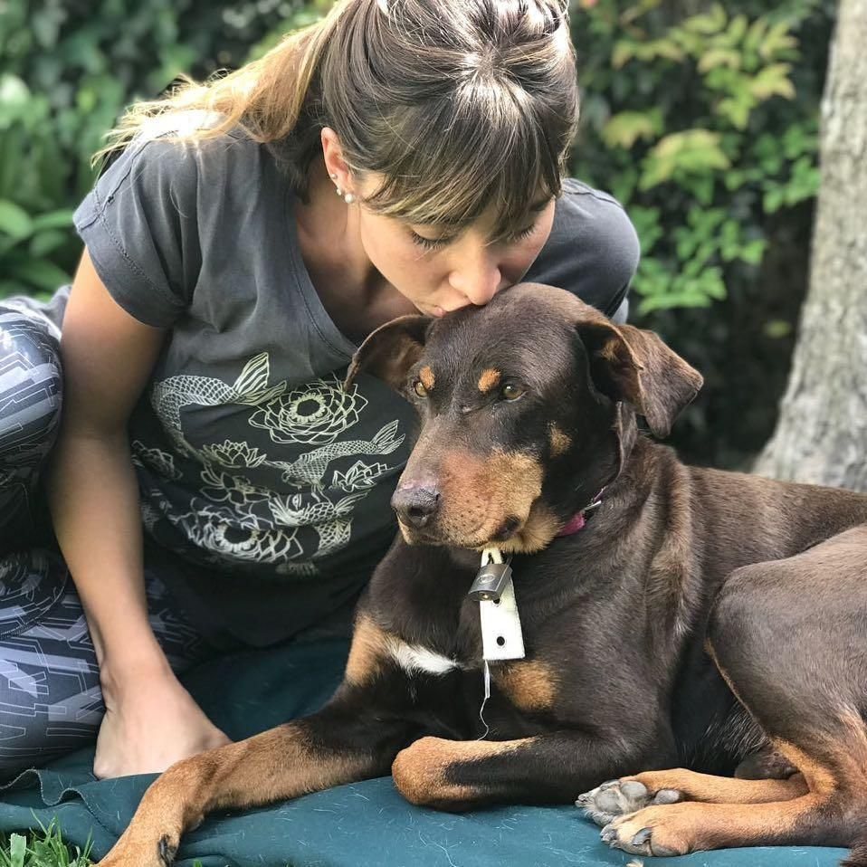

¡¡Bienvenidos a Pocas Pulgas!!



♥ Pocas Pulgas es una pequeña ONG, sin fines de lucro. Ubicados en Hipolito Yrigoyen 200, Partido de Escobar, zona norte del Gran Buenos Aires, en Argentina. desea♥ Una característica distintiva de Pocas Pulgas es el sistema de “puertas abiertas”: Cualquier persona puede visitar el refugio para brindar su amor a todos ellos o, si lo desea♥